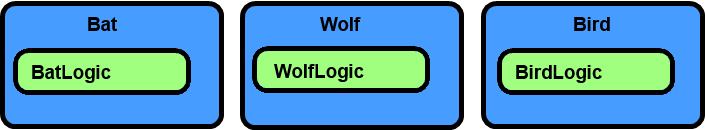
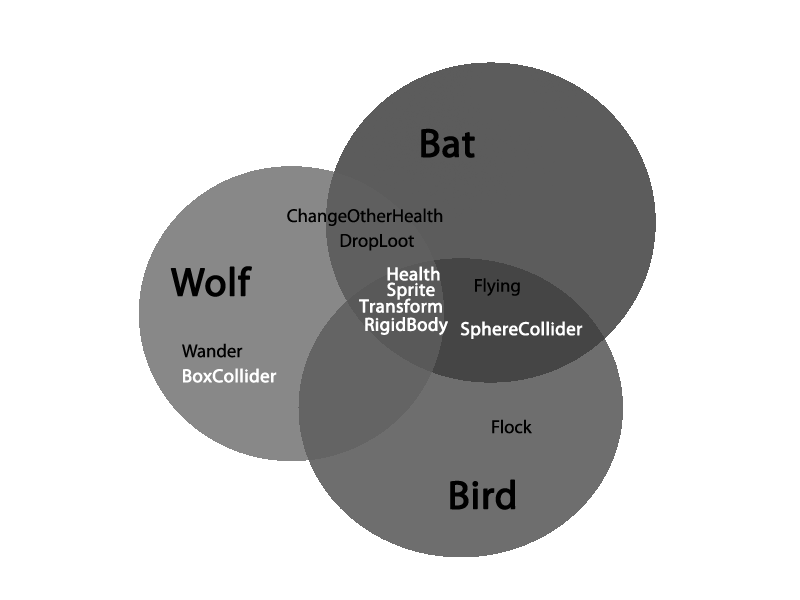
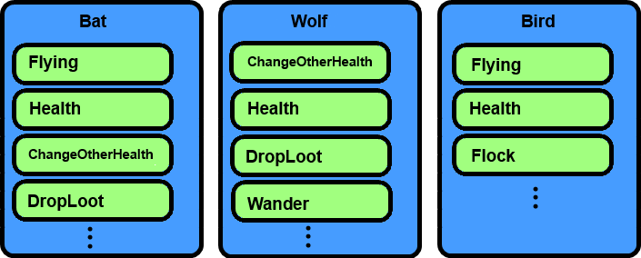
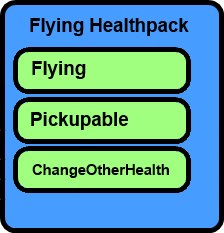

Components
Components are bits of functionality that can be added to a game object.
You can see the three components on our Player in the Properties window: Transform, Sprite, and RigidBody.
- Transform gives our game object a position, rotation, and scale.
- Sprite, which requires a Transform, allows us to visualize our game object.
- RigidBody allows our Transform’s Translation (position) and Rotation to be altered by the Physics engine.
By using components to create our game objects we can easily reuse our code to make new and different items. This set-up can aid you in rapid prototyping when making your own games.
Lets imagine we are making Bats, Wolves, and Birds. You could create 3 components:
- BatLogic
- WolfLogic
- BirdLogic

While making them you find they have some things in common. Rather than copying and pasting (which becomes messy fast), we can use the component-based engine to our advantage and rearrange our logic. By making smaller components of functionality, we can factor out the code into common components making it easier to share between them, for instance:

The ones in gray are built-in to the Zero Engine

Noticing shared functionality allows us to restructure our code
By having these things separated you can more easily prototype and create new game objects.
For instance, in our example you later decide to create a flying healthpack. By utilizing the components you already made, Flying and ChangeOtherHealth, most of the work is done.

Something we can’t make with BatLogic, WolfLogic or BirdLogic components
Components are meant to be generic (when plausible), in order to allow for reuse. In many ways, components can be made more generic by adding Properties to components.
In our example, we could make our DropLoot component more generic by having a Property represent which loot is dropped. With this new property our component could allow our Bat to drop health, while the Wolf drops a power-up, etc.